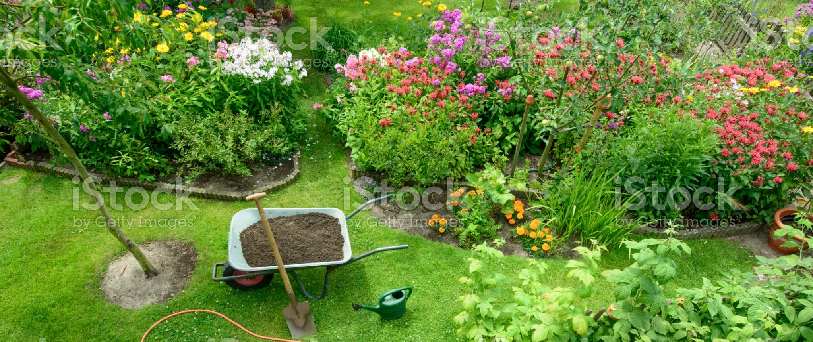

Ihr Spezialist für Garten- und Landschaftsbau
in und um München
Das bieten wir Ihnen
Erfahrung und Kompetenz
Seit 19?? sind wir Ihr zuverlässiger Partner in Ihrem Privatgarten oder gewerblichen Anlagen.
Monatliches Gartenmagazin
Unser Gartenmagazin bietet Ihnen immer aktuelle Tipps rund um das Thema Garten.
Umfangreiches Leistungsspektrum
Planung, Ausführung, Umsetzung: wir kümmern uns um alle Arbeiten zu fairen Preisen.
Kostenlose Erstberatung
Ob telefonisch oder vor Ort: wir beraten Sie gern unverbindlich zu Ihren Vorhaben im Garten.
Freundliches und professionelles Team
Zu unseren Standards zählen höchste Qualität und Zufriedenheit unserer Kunden.
Schnelle Terminvereinbarung
Kontaktieren Sie uns, um einen für Sie passenden Termin zu vereinbaren.